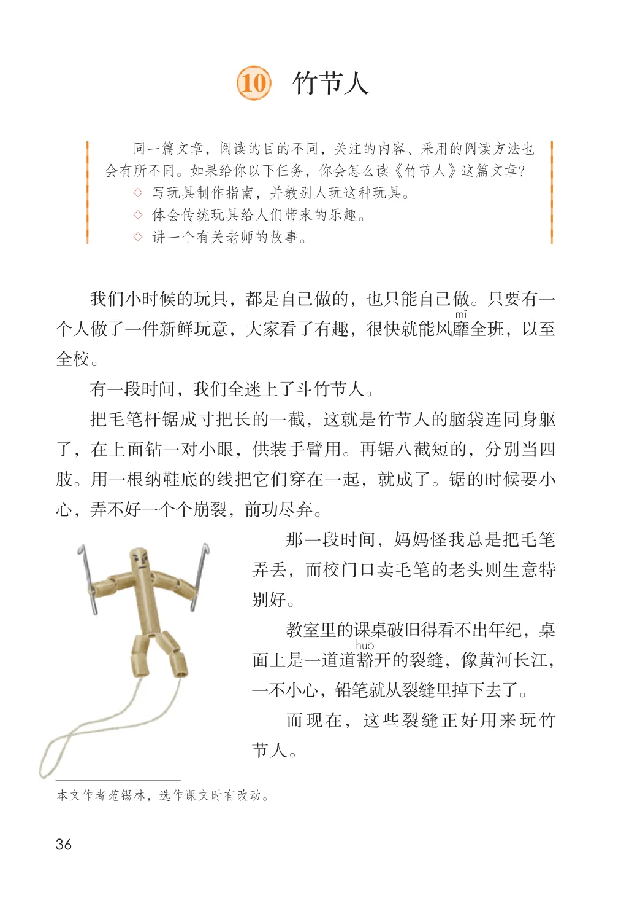
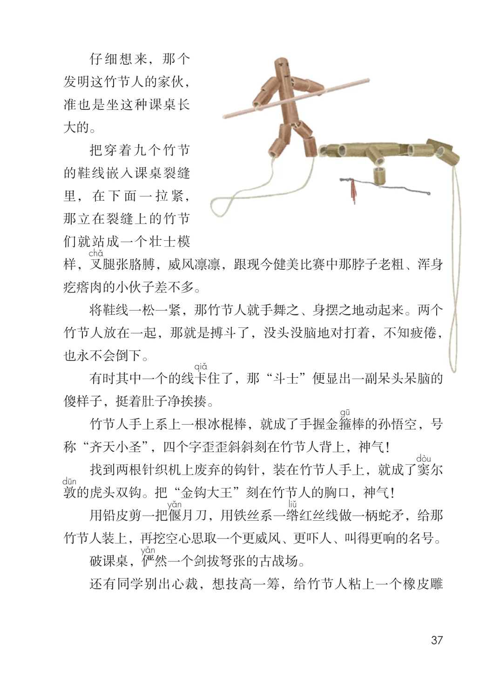
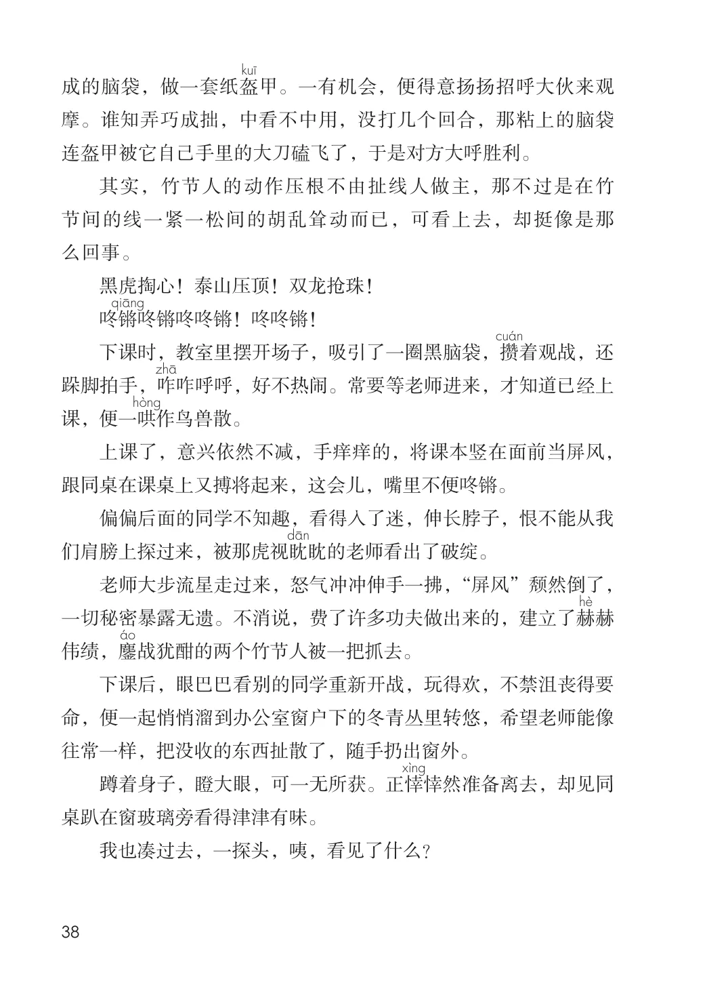
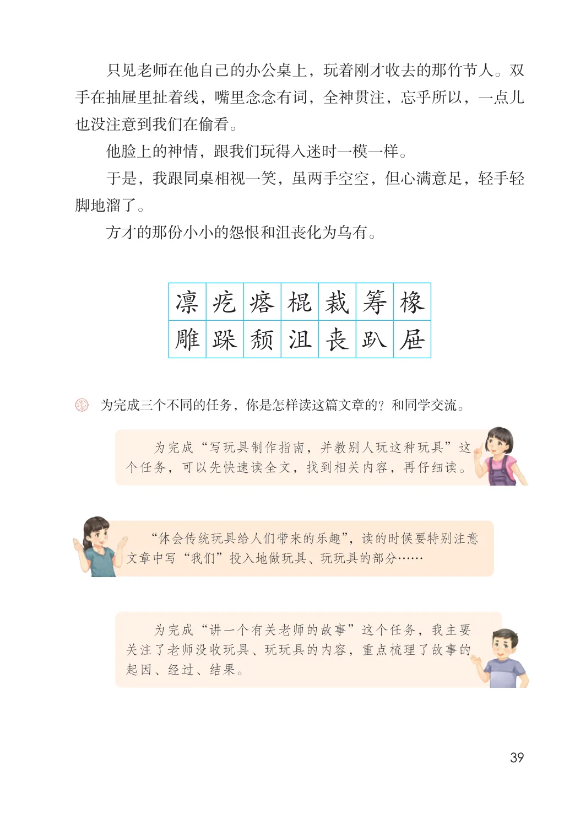

第三单元 · 第 10 课
竹节人
文字内容 PDF 第 41 页
同一篇文章，阅读的目的不同，关注的内容、采用的阅读方法也会有所不同。如果给你以下任务，你会怎么读《竹节人》这篇文章？
课后练习
- ◇ 写玩具制作指南，并教别人玩这种玩具。
- ◇ 体会传统玩具给人们带来的乐趣。
- ◇ 讲一个有关老师的故事。我们小时候的玩具，都是自己做的，也只能自己做。只要有一个人做了一件新鲜玩意，大家看了有趣，很快就能风靡全班，以至全校。有一段时间，我们全迷上了斗竹节人。把毛笔杆锯成寸把长的一截，这就是竹节人的脑袋连同身躯了，在上面钻一对小眼，供装手臂用。再锯八截短的，分别当四肢。用一根纳鞋底的线把它们穿在一起，就成了。锯的时候要小心，弄不好一个个崩裂，前功尽弃。那一段时间，妈妈怪我总是把毛笔弄丢，而校门口卖毛笔的老头则生意特别好。教室里的课桌破旧得看不出年纪，桌面上是一道道豁开的裂缝，像黄河长江，一不小心，铅笔就从裂缝里掉下去了。而现在，这些裂缝正好用来玩竹节人。
文字内容 PDF 第 42 页
仔细想来，那个发明这竹节人的家伙，准也是坐这种课桌长大的。
把穿着九个竹节的鞋线嵌入课桌裂缝里，在下面一拉紧，那立在裂缝上的竹节们就站成一个壮士模样，叉腿张胳膊，威风凛凛，跟现今健美比赛中那脖子老粗、浑身疙瘩肉的小伙子差不多。
将鞋线一松一紧，那竹节人就手舞之、身摆之地动起来。两个竹节人放在一起，那就是搏斗了，没头没脑地对打着，不知疲倦，也永不会倒下。
有时其中一个的线卡住了，那“斗士”便显出一副呆头呆脑的傻样子，挺着肚子净挨揍。
竹节人手上系上一根冰棍棒，就成了手握金箍棒的孙悟空，号称“齐天小圣”，四个字歪歪斜斜刻在竹节人背上，神气！
找到两根针织机上废弃的钩针，装在竹节人手上，就成了窦尔敦的虎头双钩。把“金钩大王”刻在竹节人的胸口，神气！
用铅皮剪一把偃月刀，用铁丝系一绺红丝线做一柄蛇矛，给那竹节人装上，再挖空心思取一个更威风、更吓人、叫得更响的名号。
破课桌，俨然一个剑拔弩张的古战场。
还有同学别出心裁，想技高一筹，给竹节人粘上一个橡皮雕
文字内容 PDF 第 43 页
成的脑袋，做一套纸盔甲。一有机会，便得意扬扬招呼大伙来观摩。谁知弄巧成拙，中看不中用，没打几个回合，那粘上的脑袋连盔甲被它自己手里的大刀磕飞了，于是对方大呼胜利。
其实，竹节人的动作压根不由扯线人做主，那不过是在竹节间的线一紧一松间的胡乱耸动而已，可看上去，却挺像是那么回事。
黑虎掏心！泰山压顶！双龙抢珠！
咚锵咚锵咚咚锵！咚咚锵！
下课时，教室里摆开场子，吸引了一圈黑脑袋，攒着观战，还跺脚拍手，咋咋呼呼，好不热闹。常要等老师进来，才知道已经上课，便一哄作鸟兽散。
上课了，意兴依然不减，手痒痒的，将课本竖在面前当屏风，跟同桌在课桌上又搏将起来，这会儿，嘴里不便咚锵。
偏偏后面的同学不知趣，看得入了迷，伸长脖子，恨不能从我们肩膀上探过来，被那虎视眈眈的老师看出了破绽。
老师大步流星走过来，怒气冲冲伸手一拂，“屏风”颓然倒了，一切秘密暴露无遗。不消说，费了许多功夫做出来的，建立了赫赫伟绩，鏖战犹酣的两个竹节人被一把抓去。
课后练习
- 下课后，眼巴巴看别的同学重新开战，玩得欢，不禁沮丧得要命，便一起悄悄溜到办公室窗户下的冬青丛里转悠，希望老师能像往常一样，把没收的东西扯散了，随手扔出窗外。蹲着身子，瞪大眼，可一无所获。正悻悻然准备离去，却见同桌趴在窗玻璃旁看得津津有味。我也凑过去，一探头，咦，看见了什么？
文字内容 PDF 第 44 页
只见老师在他自己的办公桌上，玩着刚才收去的那竹节人。双手在抽屉里扯着线，嘴里念念有词，全神贯注，忘乎所以，一点儿也没注意到我们在偷看。
他脸上的神情，跟我们玩得入迷时一模一样。
于是，我跟同桌相视一笑，虽两手空空，但心满意足，轻手轻脚地溜了。
方才的那份小小的怨恨和沮丧化为乌有。
凛疙瘩棍裁筹橡雕跺颓沮丧趴屉
课后练习
- 为完成三个不同的任务，你是怎样读这篇文章的？和同学交流。
- 为完成“写玩具制作指南，并教别人玩这种玩具”这个任务，可以先快速读全文，找到相关内容，再仔细读。“体会传统玩具给人们带来的乐趣”，读的时候要特别注意文章中写“我们”投入地做玩具、玩玩具的部分……
- 为完成“讲一个有关老师的故事”这个任务，我主要关注了老师没收玩具、玩玩具的内容，重点梳理了故事的起因、经过、结果。
原版对照
原书页面与全部插图
点击图片可查看大图。



